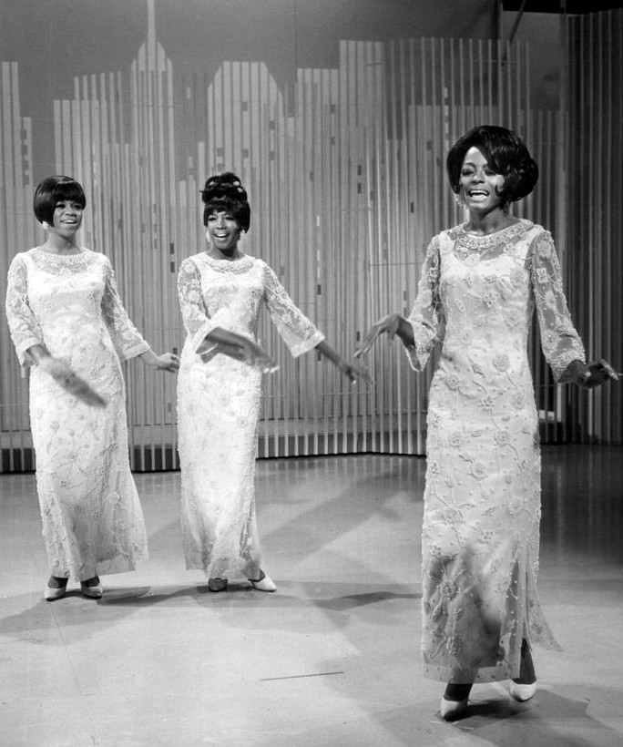

1966 music crowned a Vietnam War ballad as the year's biggest single.
Staff Sergeant Barry Sadler's The Ballad of the Green Berets spent five weeks at number one, the longest run of 1966.
Billboard's revised year-end ranking puts it first.
Twenty-seven different songs reached number one that year, and the Monkees closed it out.
Listen to 1966 Music
25 of 1966's biggest hits are playable below, from Billboard's year-end top 100 for 1966.
Press play on any row, or use Play All to run the whole list.
| # | Title | Artist | Chart Peak | Genre |
|---|---|---|---|---|
| The Ballad of the Green Berets | Barry Sadler | No. 1, 5 wks | Patriotic ballad | |
| Cherish | The Association | No. 1, 3 wks | Pop & Brill Building | |
| (You're My) Soul and Inspiration | The Righteous Brothers | No. 1, 3 wks | Pop & Brill Building | |
| Reach Out I'll Be There | Four Tops | No. 1, 2 wks | Motown, Soul & R&B | |
| 96 Tears | ? and the Mysterians | No. 1, 1 wk | Garage & Surf Rock | |
| Last Train to Clarksville | The Monkees | No. 1, 1 wk | Pop & Brill Building | |
| Monday, Monday | The Mamas & the Papas | No. 1, 3 wks | Folk Rock | |
| You Can't Hurry Love | The Supremes | No. 1, 2 wks | Motown, Soul & R&B | |
| Poor Side of Town | Johnny Rivers | No. 1, 1 wk | Pop & Brill Building | |
| California Dreamin' | The Mamas & the Papas | No. 4 | Folk Rock | |
| Summer in the City | The Lovin' Spoonful | No. 1, 3 wks | Folk Rock | |
| Born Free | Roger Williams | No. 7 | Jazz & Easy Listening | |
| These Boots Are Made for Walkin' | Nancy Sinatra | No. 1, 1 wk | Pop & Brill Building | |
| What Becomes of the Brokenhearted | Jimmy Ruffin | No. 7 | Motown, Soul & R&B | |
| Strangers in the Night | Frank Sinatra | No. 1, 1 wk | Jazz & Easy Listening | |
| We Can Work It Out | The Beatles | No. 1, 3 wks | British Invasion | |
| Good Lovin' | The Young Rascals | No. 1, 1 wk | Motown, Soul & R&B | |
| Winchester Cathedral | The New Vaudeville Band | No. 1, 3 wks | British Invasion | |
| Hanky Panky | Tommy James and the Shondells | No. 1, 2 wks | Garage & Surf Rock | |
| When a Man Loves a Woman | Percy Sledge | No. 1, 2 wks | Motown, Soul & R&B | |
| Paint It Black | The Rolling Stones | No. 1, 2 wks | British Invasion | |
| My Love | Petula Clark | No. 1, 2 wks | British Invasion | |
| Lightnin' Strikes | Lou Christie | No. 1, 1 wk | Pop & Brill Building | |
| Wild Thing | The Troggs | No. 1, 2 wks | British Invasion | |
| Kicks | Paul Revere & the Raiders | No. 4 | Garage & Surf Rock |

Table of Contents
- Listen to 1966 Music
- 1966 Music's Billboard Hot 100 Number Ones
- Key Albums Released in 1966
- Notable Events in 1966
- Genre Shifts in 1966 Music
- Play 1966 on the Radio Dial
- FAQ
1966 Music's Billboard Hot 100 Number Ones
Twenty-seven different songs reached the top of the Billboard Hot 100 in 1966.
Seven of them came from British acts, including the Beatles, the Rolling Stones and the Troggs.
The Beatles and Barry Sadler led the year with five weeks at number one each.
| Title | Artist | Chart | Peak Date | Weeks at #1 in 1966 |
|---|---|---|---|---|
| The Sound of Silence | Simon & Garfunkel | Billboard Hot 100 | Jan 1, 1966 | 2 |
| We Can Work It Out | The Beatles | Billboard Hot 100 | Jan 8, 1966 | 3 |
| My Love | Petula Clark | Billboard Hot 100 | Feb 5, 1966 | 2 |
| Lightnin' Strikes | Lou Christie | Billboard Hot 100 | Feb 19, 1966 | 1 |
| These Boots Are Made for Walkin' | Nancy Sinatra | Billboard Hot 100 | Feb 26, 1966 | 1 |
| The Ballad of the Green Berets | SSgt. Barry Sadler | Billboard Hot 100 | Mar 5, 1966 | 5 |
| (You're My) Soul and Inspiration | The Righteous Brothers | Billboard Hot 100 | Apr 9, 1966 | 3 |
| Good Lovin' | The Young Rascals | Billboard Hot 100 | Apr 30, 1966 | 1 |
| Monday, Monday | The Mamas & the Papas | Billboard Hot 100 | May 7, 1966 | 3 |
| When a Man Loves a Woman | Percy Sledge | Billboard Hot 100 | May 28, 1966 | 2 |
| Paint It Black | The Rolling Stones | Billboard Hot 100 | Jun 11, 1966 | 2 |
| Paperback Writer | The Beatles | Billboard Hot 100 | Jun 25, 1966 | 2 |
| Strangers in the Night | Frank Sinatra | Billboard Hot 100 | Jul 2, 1966 | 1 |
| Hanky Panky | Tommy James and the Shondells | Billboard Hot 100 | Jul 16, 1966 | 2 |
| Wild Thing | The Troggs | Billboard Hot 100 | Jul 30, 1966 | 2 |
| Summer in the City | The Lovin' Spoonful | Billboard Hot 100 | Aug 13, 1966 | 3 |
| Sunshine Superman | Donovan | Billboard Hot 100 | Sep 3, 1966 | 1 |
| You Can't Hurry Love | The Supremes | Billboard Hot 100 | Sep 10, 1966 | 2 |
| Cherish | The Association | Billboard Hot 100 | Sep 24, 1966 | 3 |
| Reach Out I'll Be There | Four Tops | Billboard Hot 100 | Oct 15, 1966 | 2 |
| 96 Tears | ? and the Mysterians | Billboard Hot 100 | Oct 29, 1966 | 1 |
| Last Train to Clarksville | The Monkees | Billboard Hot 100 | Nov 5, 1966 | 1 |
| Poor Side of Town | Johnny Rivers | Billboard Hot 100 | Nov 12, 1966 | 1 |
| You Keep Me Hangin' On | The Supremes | Billboard Hot 100 | Nov 19, 1966 | 2 |
| Winchester Cathedral | The New Vaudeville Band | Billboard Hot 100 | Dec 3, 1966 | 3 |
| Good Vibrations | The Beach Boys | Billboard Hot 100 | Dec 10, 1966 | 1 |
| I'm a Believer | The Monkees | Billboard Hot 100 | Dec 31, 1966 | 1 (7 in all) |
Two Year-End Number Ones
Billboard printed its first 1966 year-end list in the issue dated December 24, 1966.
That edition ranked California Dreamin' first and Green Berets tenth.
Billboard later revised its rankings and now counts Green Berets as the year's top single.
The tracklist above follows the revised ranking.
January's Tug of War
The Sound of Silence held number one for the weeks of January 1 and January 22.
The Beatles' We Can Work It Out held it for January 8, 15 and 29.
The Monkees Close the Year
The Monkees television series premiered on NBC on September 12.
Last Train to Clarksville, the group's debut single, reached number one on November 5.
I'm a Believer took over on December 31 and went on to seven weeks at the top in all.
Key Albums Released in 1966
Six albums stand out from 1966.
- Aftermath, The Rolling Stones, Decca Records (released April 15, 1966, UK): first album written entirely by Jagger and Richards.
- Pet Sounds, The Beach Boys, Capitol Records (released May 16, 1966).
- Blonde on Blonde, Bob Dylan, Columbia Records (released June 20, 1966): a double album.
- Freak Out!, The Mothers of Invention, Verve Records (released June 27, 1966).
- Revolver, The Beatles, Parlophone Records (released August 5, 1966, UK): number one on Billboard's album chart from September 10.
- The Monkees, The Monkees, Colgems Records (released October 10, 1966): first of four number one albums in a row.
Notable Events in 1966
- The Beatles played their last official concert at Candlestick Park in San Francisco on August 29.
- Donovan's Sunshine Superman hit number one on the Hot 100 dated September 3, 1966. Read more on September 3
- The Monkees premiered on NBC. Read more on September 12
- Brian Wilson and the Beach Boys finished the final vocal overdubs for Good Vibrations on September 21. Read more on September 21
- The Association's Cherish reached number one on September 24. Read more on September 24
- The Four Tops' Reach Out I'll Be There hit number one on the Hot 100 dated October 15, 1966. Read more on October 15
Genre Shifts in 1966 Music
1966 music pulled in several directions at once.
Five of the year-end top 25 were British Invasion songs.
Motown, soul and R&B supplied Reach Out I'll Be There, You Can't Hurry Love and When a Man Loves a Woman.
Pop and Brill Building hits included Cherish and Last Train to Clarksville.
Jazz and easy listening added Roger Williams's Born Free and Frank Sinatra's Strangers in the Night.
Garage rock came through 96 Tears, Hanky Panky and Kicks.
Folk Rock and Psychedelia Arrive
The Mamas and the Papas placed Monday, Monday and California Dreamin' in the year-end top 10.
Simon and Garfunkel's The Sound of Silence opened the chart year at number one.
Together they kept folk rock at the center of the Hot 100.
Donovan's psychedelic-pop Sunshine Superman then reached number one in September.
The Beach Boys' Good Vibrations followed on December 10, a sign that psychedelic rock was reaching the mainstream.
Play 1966 on the Radio Dial
The site's own Play 1966 on the Radio Dial tunes every station to songs from this year alone.
FAQ
What was the number one song of 1966?
The Ballad of the Green Berets by Barry Sadler is the number one song of 1966 in Billboard's revised year-end ranking.
Billboard's original printed list, dated December 24, 1966, ranked California Dreamin' first and Green Berets tenth.
Which song spent the longest at number one in 1966?
The Ballad of the Green Berets spent five weeks at number one on the Billboard Hot 100, starting March 5.
That was the longest run of any 1966 chart-topper.
How many songs hit number one in 1966?
Twenty-seven different songs reached number one on the Billboard Hot 100 in 1966.
The year opened with Simon and Garfunkel's The Sound of Silence and closed with the Monkees' I'm a Believer.
How many number ones did the Beatles have in 1966?
The Beatles had two Billboard Hot 100 number ones in 1966, for five weeks at the top.
They were We Can Work It Out, with three weeks, and Paperback Writer, with two.
What kind of music was popular in 1966?
1966 music ranged from folk rock and Motown to garage rock, easy listening and early psychedelia.
The Mamas and the Papas, the Four Tops, the Troggs and Frank Sinatra all had year-end top 25 hits.
1966 turned into the year the Hot 100 got restless.
Compare it with the chart quirks of 1965 music.
Hear more of the decade in the best 60s songs list.
Explore the rest of the decade on the 1960smusic.net homepage.